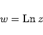
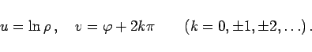
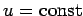
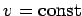
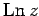
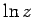
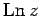
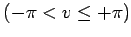
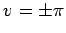
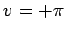

Inhalt Index DeskTop Bronstein

 Funktionentheorie Funktionen einer komplexen Veränderlichen Konforme Abbildung Einfachste konforme Abbildungen
Funktionentheorie Funktionen einer komplexen Veränderlichen Konforme Abbildung Einfachste konforme Abbildungen


Die konforme Abbildung in der Form der Logarithmusfunktion
|  | (14.17a) |
lautet in Polarkoordinaten
|  | (14.17b) |
Aus der Darstellung in Polarkoordinaten erkennt man, daß die Koordinatenlinien  und  aus den konzentrischen Kreisen um den Nullpunkt der z-Ebene und aus den Strahlen, die durch den Nullpunkt der z-Ebene verlaufen, hervorgehen.
Das isometrische Netz ist ein polares Netz.
Die Logarithmusfunktion  ist unendlich vieldeutig. Beschränkt man sich auf den Hauptwert  von  , dann geht die gesamte z-Ebene in einen Streifen der w-Ebene über, der von den Geraden  begrenzt wird, wobei die Gerade  mit eingeschlossen ist.